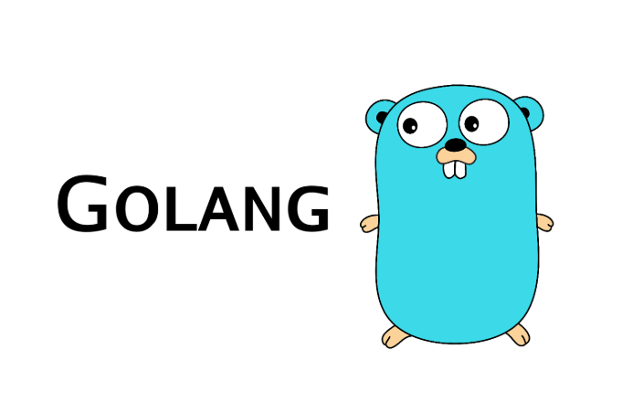

原创： IT干货栈

Hello，各位小伙伴大家好，我是小栈君，昨天讲了关于go语言的函数的定义和自定函数的部分种类，我们今天接着上期所讲的内容继续进行分享。
一、函数之无参有返回值
有返回值的函数，必须有明确的终止语句，否则会引发编译错误。所以在有返回值的函数中需要使用关键字 return 。
他可以是一个或者多个返回值。官方建议：最好命名返回值，因为不命名返回值，虽然使得代码更加简洁了，但是会造成生成的文档可读性差。
//方式1
func Test01() int {
return 250
}
//方式2, 给返回值命名
func Test02() (a int) {
a = 250
return a
}
//方式3, 给返回值命名
func Test03() (value int) {
value = 250
return
}
func main() {
v1 := Test01() //函数调用
v2 := Test02() //函数调用
v3 := Test03() //函数调用
fmt.Printf("v1 = %d, v2 = %d, v3 = %d\n", v1, v2, v3)
}有过编程经验的小伙伴可能发现了，这样的编程语法其实是和JavaScript相差不大的。
对于函数的调用或是定义都和其他语言有点区别，如果慢慢熟悉这种语法了，其实也会觉得go语言是一门很好的入门，且性能很高的语言类型。
为什么会这么说性能很高呢，因为go语言内置了性能测试包提供了很多三方库进行协助我们对代码进行调优工作。
所以只要我们善于使用三方库，善于学习，肯定会写出高质量，高可用，高性能的代码啦。
二、函数之无参多个返回值
顾名思义，多个返回值就是利用Go语言处理程序后返回多个值，但在实战开发的时候，我们一般是使用两个返回值，一个是我们需要返回的处理后的结果，另一个就是错误err。方便我们进行异常处理。
//方式1
func Test01() (int, string) {
return 520, "it干货栈"
}
//方式2, 给返回值命名
func Test02() (a int, str string) {
a = 520
str = "it干货栈"
return
}
func main() {
v1, v2 := Test01() //函数调用
_, v3 := Test02() //函数调用， 第一个返回值丢弃
v4, _ := Test02() //函数调用， 第二个返回值丢弃
fmt.Printf("v1 = %d, v2 = %s, v3 = %s, v4 = %d\n", v1, v2, v3, v4)
}三、函数之有参返回值
//求2个数的和差
func SumAndSubtract(num1 int, num2 int) (sun int, subtract int) {
return num1 +num2 ,num1-num2
}
func main() {
min, max := SumAndSubtract(33, 22)
fmt.Printf("min = %d, max = %d\n", min, max)
//sum = 55, subtract = 11
}四、函数之递归函数
递归指函数可以直接或间接的调用自身。递归函数通常有相同的结构：一个跳出条件和一个递归体。
所谓跳出条件就是根据传入的参数判断是否需要停止递归，而递归体则是函数自身所做的一些处理。在编程语言中特别是对于树形结构中我们常常使用的是关于递归的操作。
我们现在来通过循环实现1+2+3……+100的相加求和例子
// 普通实现，利用循环进行累加
func Test01() int {
i := 1
sum := 0
for i = 1; i <= 100; i++ {
sum += i
}
return sum
}
//通过递归实现1+2+3……+100
func Test02(num int) int {
if num == 1 {
return 1
}
return num + Test02(num-1) //函数调用本身
}
//通过递归实现1+2+3……+100
func Test03(num int) int {
if num == 100 {
return 100
}
return num + Test03(num+1) //函数调用本身
}
func main() {
fmt.Println(Test01()) //5050
fmt.Println(Test02(100)) //5050
fmt.Println(Test03(1)) //5050
}我们用了三种方式来进行实现这个例子，一种是普通的for循环相加，我们在代码中已经定死了100的常数。
假如我们做成99的相加的话，那么就得改代码，所以实用性不高。
另一种是关于进行传参，我们传入100作为最终的计算数字，如果我们想做成50的相加，那么也只需要改变传参，可用性较高。
最后用的是初始传参，虽然是可以做为100以内的计算，但如果我们改成101的呢？
他是不是会一直计算下去导致内存溢出呢？所以我们在编写代码的时候，也是需要大家能够多想一下，毕竟这个也是需要经验的积累的一个过程。
好了，今天的分享就到这里啦，我们主要分享了一下关于go语言的无参，有参 和递归函数，下一期我们继续分享关于go语言的函数类型。
我是小栈君，如果你喜欢我的分享，麻烦你点击一个好看，转发或分享，当然也可以后台私信给我哦。
这里每天会分享包含java，go，Python，大数据，人工智能的相关干货，我们一起提高，一起进步。我是小栈君，我们明天再见，拜了个拜。